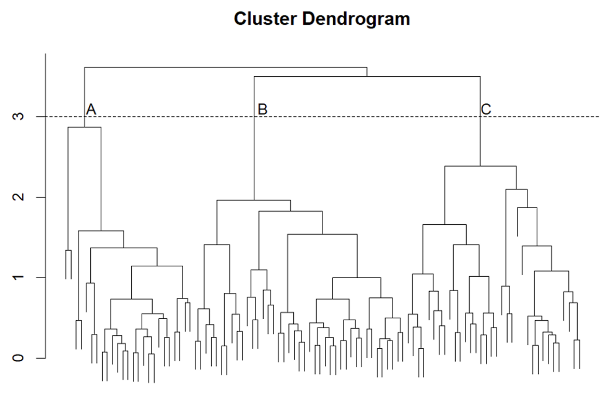

Practice-Exam
Practice Exam
1. Explain in your own words how much of the variance is explained by a PCA retaining \(p\) components in a dataset containing \(p\) variables.
If the number of components in equal to the number of features/variables, 100% of the variance is retained by PCA, since the total variance in PCA is defined as the trace of the sample covariance matrix. Now if the number of components retained is equal to the number of features, the total variance comprises of a summation across all of the diagonal elements in the sample covariance matrix, which is a matrix of size \(p\) by \(p\).
2. You have performed hierarchical clustering on a dastet with Euclidian distance and the average linkdage method. You obtain the following dendogram, which you decide to cut at height = 3 (horizontally dashed line). You label the clustered observations belonging to the leftmost branch A, the middle branch B and the rightmost branch C. Which clusters are, on average, most similar, as measured by the Euclidian distance?

In this figure, the Y-axis refers to the between cluster dissimilarity, where a higher score represents greater dissimilarity and a lower score greater similarity. Now we can see that they share a branch that does not contain A, which has a lower dissimilarity score (i.e., greater similarity) compared to the shared branch before it that includes A.
3. You have a corpus of 20 000 tweets about a governmental election in the Netherlands, with a total number of 50 000 unique words. Your goal is to classify sentiment orientation (positive, negative) of each tweet. The first step is to create a vector representation of your text data using one of the two methods:
Bag-of-Words (e.g., tf-idf)
Word Embedding (e.g., word2vec)
Which method would be better in terms of memory allocation and capturing words relations? Explain your reasoning.
For bag-of-word representations, we would receive a document-term matrix of 20,000 rows and 50,000 columns. This is very high dimensional—taking up a lot of memory—and probably very sparse, as tweets are likely to differ in the vocabulary that they use. On the other hand, with word embedding representations that predict (instead of count) such as word2vec, we need only two vectors for each word: one with the word as target and one with the word as context. In this application, this would mean that we have a 2 by 50,000 matrix, which is a denser representation compared to the bag-of-word representations, which implies that word embedding methods indeed tend to be more efficient in memory allocation than bag-of-words representations.
Secondly, word embedding methods rely on the assumption that words that occur in similar contexts tend to have similar meanings (i.e., distributional hypothesis). As a results, embedding methods such as word2vec are superior at capturing words relations compared to bag-of-word relations, as in their loss function it focuses on maximizing the similiarity of a target word with positive examples (neighboring/context words) while minimizing the similarity of a target word with negative examples (non-neighbhoring words). Conversely, bag-of-word representations discard any information on word order and relations and only focusses on the (relative) term frequency in a given document.
4. Text preprocessing is an important step for text mining. In your own words explain the purpose of text preprocessing.
In text mining, we aim to discover new information by extracting information from unstructured text data. If we perform no preprocessing of our text data prior to model fitting, the models may simply fail to work, fail to converge, or suffer from more random noise that it needs to deal with it, therefore also potentially increasing the risk of overfitting. Text preprocessing is important as it reduces the dimensionality of the data, improves the quality of the data, improves memory allocation and also the performance of the text mining models. For instance, imagine that we have some spelling mistakes in our text data. Because of this, we would treat these two terms as two distinct words, increasing the dimensionality unnecessarily. In addition, numbers also tend to hinder text mining algorithms, as there are essentially an infinite number of numbers.
Below is a grading rubric for the test, with points assigned to each question and a final scoring method:
Grading Rubric
1. PCA and Explained Variance (2 points)
- 1 point: Correct explanation of why PCA retains 100% of the variance when all components are used.
- 1 point: Correct mention of the total variance being the trace of the covariance matrix and how it relates to summing diagonal elements.
Deduction: Incomplete explanation of PCA mechanics or missing reference to trace and summation.
2. Hierarchical Clustering (3 points)
- 1 point: Correctly identifies that the Y-axis represents dissimilarity.
- 1 point: Correct identification of which clusters (B and C) are more similar based on their shared branch and dissimilarity score.
- 1 point: Explanation of why A is excluded based on higher dissimilarity.
Deduction: Incorrect cluster identification or insufficient explanation of dissimilarity scores.
3. Bag-of-Words vs. Word Embeddings (3 points)
- 1 point: Correct description of the memory inefficiency of bag-of-words (large, sparse matrix).
- 1 point: Correct description of word embeddings’ efficiency due to dense vector representations.
- 1 point: Clear explanation of how embeddings capture word relations using the distributional hypothesis.
Deduction: Misunderstanding of memory allocation or unclear comparison of methods’ ability to capture word relationships.
4. Purpose of Text Preprocessing (2 points)
- 1 point: General understanding of text preprocessing as reducing noise, dimensionality, and improving model performance.
- 1 point: At least one specific example (e.g., spelling mistakes, numbers) and explanation of its impact on model performance.
Deduction: Lacks specific examples or misses key aspects like noise reduction and dimensionality improvement.
Scoring based on Answers
- PCA: Explanation of 100% variance retention and the trace is correct (2/2).
- Clustering: Correct reasoning and identification of most similar clusters (3/3).
- Word Embeddings: Clear explanation of memory allocation and capturing word relations (3/3).
- Preprocessing: Thorough explanation with examples (2/2).
Total: 10/10